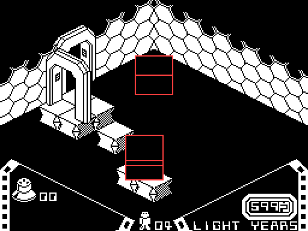
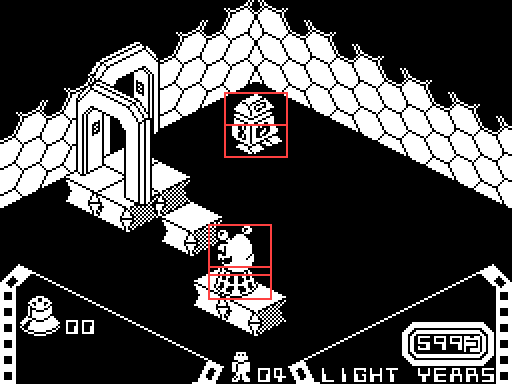
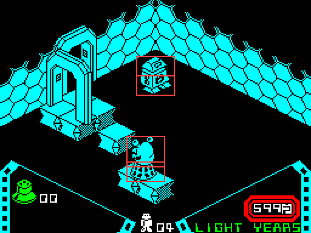
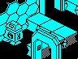

| How a moving object is drawn |
Alien 8 draws the way Knight Lore and Pentagram do, with Pentagram's code nearly instruction for instruction (Knight Lore's page on the pipeline; Pentagram's drawing page). Nothing on the screen is rubbed out and redrawn in place. Each turn only the rectangles that something changed in are rebuilt, in a buffer off the screen, in depth order, and copied across whole. This page follows the pipeline stage by stage, then a real turn of the game through it, and then measures where Alien 8 differs from its neighbours.
The main loop (AFTER_GAME) walks all 56 object records -- the robot's legs and top, two for the valves (and extra lives) lying in the room, and 52 for the room itself. Before each object's update routine runs, the stack is reset to $F100, the top of STACK_SPACE; the address of OBJECT_DONE is pushed for the routine to return to, and where the object's picture was last drawn (+$18 to +$1B: the width in bytes, the height in rows, the pixel x and y) is copied to +$1C to +$1F: that is what may have to be rubbed out. The routine is found by the graphic number in UPDATES. A fresh stack for every object is Knight Lore's way; Pentagram keeps one stack all turn.
A thing that falls calls DEC_DZ_AND_UPDATE_UVZ: one off its Z step for gravity, then ADJ_FOR_OUT_OF_BOUNDS, which cuts the step in U, V and Z against the floor, the walls and the other 55 records, one axis at a time, and adds what is left (see how the robot moves). A thing that animates changes its graphic number, which is its sprite; there is no frame counter in the drawing.
Most update routines that moved or changed something end in SET_WIPE_AND_DRAW_FLAGS: bits 4 (draw me) and 5 (wipe my old picture) of +$07, then SET_DRAW_OBJS_OVERLAPPED. That works out the new picture's rectangle (CALC_2D_INFO, projecting the position through CALC_PIXEL_XY: pixel x = U + V - 128 and, counted up from the bottom, pixel y = (V - U + 128)/2 + Z - 40, each plus the object's drawing nudge at +$12 and +$13), takes the rectangle covering it and the old one, and sets bit 4 on every live record whose own rectangle meets it: those will be drawn again, because the wipe takes a bite out of them. It is one level deep: what is marked does not mark its own neighbours. The robot's legs end their update this way every turn, moving or not, and his top (TOP_FOLLOWS_LEGS) copies the legs' place and graphic and marks itself the same way, so the robot is two wipes and two draws every turn.
When all 56 have had their turn, LIST_DRAWN writes the number of every record with bit 4 into DRAW_LIST, and RENDER_DYNAMIC_OBJECTS takes each one that also has bit 5: it clears the rectangle covering its old and new pictures in the buffer at BUFFER -- never on the screen -- in whole bytes across and pixel rows up, with FILL_BOX, and pushes the rectangle on the stack to copy later.
SORT_AND_DRAW then draws every listed object into the buffer, each whole and through its own mask, in an order worked out from their boxes: it takes a candidate, compares it with every other undrawn object, and swaps to any that has to go first, by the 27-entry table at DEPTH_ORDER; a candidate that survives the whole list is drawn. The table is Knight Lore's entry for entry, and Knight Lore's depth-sort page draws all 27 cases. CALC_PIXEL_XY_AND_RENDER draws one: FLIP_SPRITE finds the sprite and turns it in place to face the way the object does, and an unrolled run of code, SPRITE_ALIGNED_RUN for a picture on a byte boundary or SPRITE_SHIFTED_RUN for one that is not, lays it into the buffer with the stack pointer reading the sprite a mask and an image byte at a time.
Last, RENDER_DYNAMIC_OBJECTS pops each rectangle and BLIT_TO_SCREEN copies just that part of the buffer to the display. Nothing outside the rectangles changes, so it does not matter what else lies in the buffer, and nothing flickers, because nothing is drawn on the display piece by piece.
DRAW_WORK counts the turn's work -- one for each object drawn, one for each rectangle wiped -- and OBJECT_DONE then waits six units less that, a unit being 768 turns of a 26 T-state loop, about 20,000 T-states or two-thirds of a television frame (Knight Lore's and Pentagram's unit is 1280 turns). A quiet turn is padded out to the length of one with six things to do; a busier one takes longer. Then the light-years clock is counted and printed (RUN_CLOCK; see the clock). On the first turn in a room nothing is wiped: the panel is drawn (DISPLAY_PANEL), the screen coloured (COLOUR_PANEL) and the whole buffer copied once (SHOW_BUFFER).
Room $A6 has a pacer (86, PACER) walking to and fro on a platform: a creature in two records, its lower half graphic 11 (LOWER_HALF) put under it each turn. The robot stands at the back. This is its turn 5 in the room -- the first turn draws everything, and these are ordinary ones -- run by the game's own code in a simulator when this page was built, stopped at MAIN_END_OF_TURN after the updates, at the sort in RENDER_DYNAMIC_OBJECTS, at every call of CALC_PIXEL_XY_AND_RENDER and after the copy. 4 records moved or changed, so there are 4 rectangles, outlined in red; 9 objects are drawn to fill them, and DRAW_WORK comes to 13 (9 + 4), so the turn does not wait at all. Two of the rectangles are the robot's, standing still.
The screen as the turn begins.

The buffer after the wipe: each rectangle is cleared. Round them are the leftovers of earlier turns, which are never copied.

The buffer after drawing: every listed object drawn whole, back to front, so parts of them spill outside the rectangles.

The screen after the rectangles are copied.
The objects drawn, in the order the depth sort chose:
| Order | Record | Graphic | Update routine | Why it is drawn |
|---|---|---|---|---|
| 1 | 10 | 13 | DRAW_AT_L12_D7 | overlaps a change |
| 2 | 19 | 13 | DRAW_AT_L12_D7 | overlaps a change |
| 3 | 0 | 21 | PLAYER_LEGS | the legs: marked every turn, moving or not |
| 4 | 1 | 37 | TOP_FOLLOWS_LEGS | the top: marks itself every turn, following the legs |
| 5 | 23 | 47 | LIFT | overlaps a change |
| 6 | 22 | 47 | LIFT | overlaps a change |
| 7 | 24 | 47 | LIFT | overlaps a change |
| 8 | 26 | 11 | LOWER_HALF | moved |
| 9 | 25 | 86 | PACER | moved |
The rectangles wiped and copied, in pixels from the top left:
| x | y | Width | Height |
|---|---|---|---|
| 112 | 62 | 32 | 17 |
| 112 | 46 | 32 | 17 |
| 104 | 112 | 32 | 26 |
| 104 | 133 | 32 | 17 |
| Knight Lore | Pentagram | Alien 8 | |
|---|---|---|---|
| Object records | 40 | 54 | 56 (OBJECTS) |
| The draw list | 48 bytes | 48 bytes, which can overflow | 64 bytes (DRAW_LIST) |
| The chain of candidates | 8 bytes | 16 bytes | 16 bytes (CANDIDATE_CHAIN) |
| A picture left of the screen | wraps round | drawn from x 0 | would wrap round, but the walls keep everything clear of it (CALC_PIXEL_XY) |
| The stack | reset for every object | one stack all turn | reset for every object |
| Boxes that intersect (entry 13) | destroy a collectable caught in them | nothing | destroy a loose valve caught in them (BOXES_INTERSECT) |
| After a game | -- | -- | nothing projected: the scenes place their pictures by pixel (CALC_PIXEL_XY) |
| A unit of waiting | 1280 loops | 1280 loops | 768 loops |
DRAW_LIST is 64 bytes: all 56 records and the $FF after them fit with seven to spare, so unlike Pentagram's 48-byte list, which a player can overflow into the sort's own code (on its drawing page), it cannot overflow however full a room gets. The list is longest on the first turn in a room, when everything is drawn. Run in every one of the 128 rooms for 24 turns from the first, the robot standing where he appears, the longest was 51, in room $74 -- every record in use there -- and in no room was a later turn's list longer than the first's.
The sort keeps every object it has made the candidate since the last draw, so that meeting one again -- three or more boxes each partly behind the next -- is caught and broken by drawing it at once. Knight Lore's chain holds seven and its end marker; Alien 8's, like Pentagram's, fifteen. Over the same turns the longest chain was 8, in room $82; 1 room made a chain longer than Knight Lore's seven, which in Knight Lore's eight bytes would have written its end marker over the code after it. Nothing checks the chain's length; fifteen is well clear of what the rooms need.
CALC_PIXEL_XY does not stop a pixel x below 0, as Pentagram's does: U + V - 128 plus a negative nudge that goes below zero wraps round to about 250, as in Knight Lore. It never needs to. The walls stop a thing whose half-size plus its distance from the middle would reach them, so in a full-sized room, walls at 64, the robot, half-size 7, gets no nearer the left-hand corner than U and V 72 -- and his nudge of -16 puts his legs at exactly x 0. Walked into that corner in the simulator (towards low U, then low V, in room $4E), he stopped at U 72, then V 72, and was drawn from x 0. On the first turn of all 128 rooms no picture's x went below 0.

The robot in the corner of room $4E at U and V 72: his legs drawn at pixel x 0.
When two boxes overlap on all three axes, BOXES_INTERSECT turns a loose valve (graphics 96-99) caught in either into graphic 64, the start of a sparkle that empties its place in the table of places: the valve is lost for the game. Knight Lore does the same to its collectables; Pentagram does nothing there. It is measured on the chambers page.